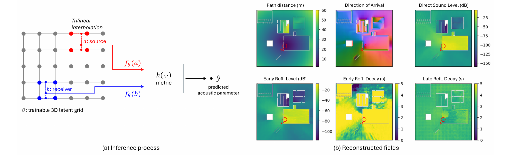
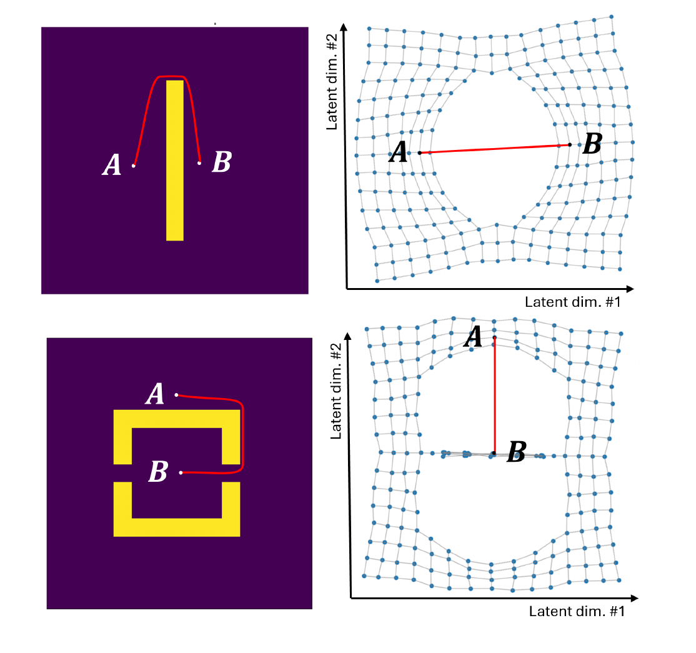
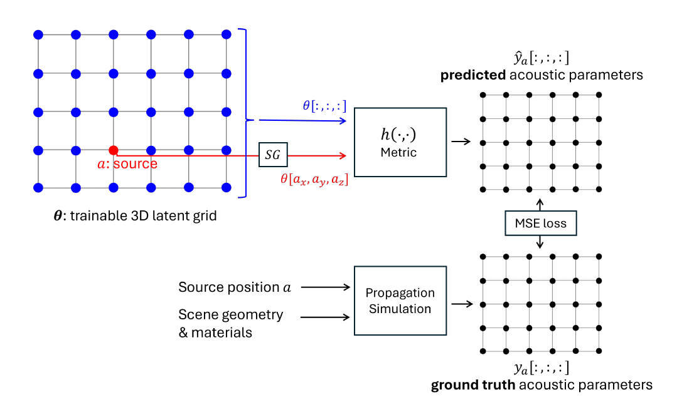
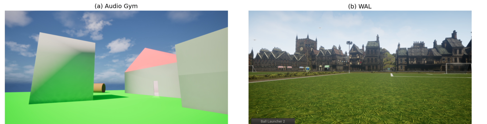
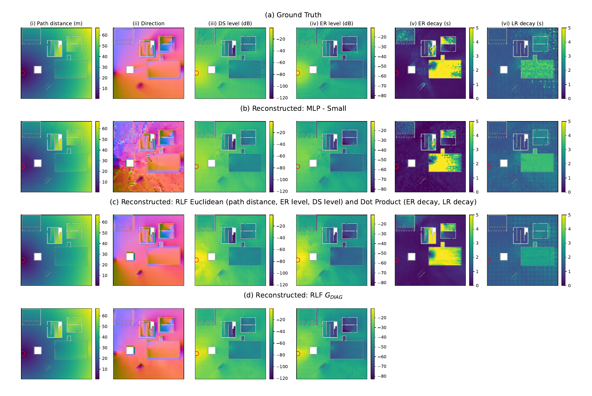
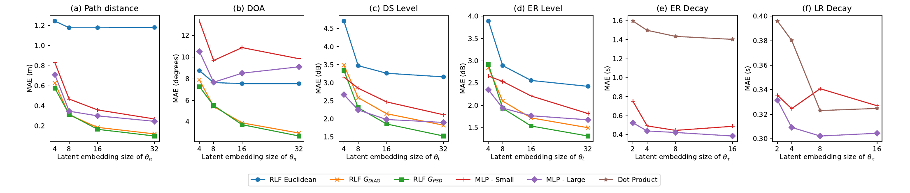

Reciprocal Latent Fields for Precomputed Sound Propagation
Reciprocal Latent Fields（RLF）
RLF｜互易潛在場
把遊戲地圖的聲音傳播資料，從 182 GB 壓成 14 MB 的方法
論文：Seuté（Ubisoft La Forge）、Vasudev、Richan、Buffoni（Audiokinetic）・SIGGRAPH 2026
[1]
報告日期 2026-10-19
聲音資料的記憶體大小
遊戲要讓聲音有真實的回音與遮擋，得事先算好一大堆「聲學參數」存起來。下面是同一張遊戲地圖（Wwise Audio Lab，208 × 10 × 185 m）存一組參數需要的記憶體 [1]：
舊方法（wave coding）需要
本篇方法（RLF）只需要
意思是：182 GB ≈ 186,000 MB，約小 13,000 倍。舊方法比一般電腦、遊戲主機的整個記憶體還大，放不進遊戲；新方法則很輕鬆。聽測中，玩家也聽不出兩者的差別 [1]
本篇的 DSP 位置
整個系統分成兩半：DSP 負責「把聲音的物理變成幾個數字、再把數字變回聲音」；機器學習負責「把這些數字存得很小」
| DSP 概念 | 在流程中做什麼 | 頁碼 |
|---|---|---|
| 取樣（空間、時間）與穩定條件 | FDTD 模擬：把空間切格子、時間切小步 | 16 |
| 分貝、能量 | 把「多大聲」變成 dB 數字 | 15 |
| 脈衝響應、時間窗 | 把一條回音切成直達 / 早期 / 晚期三段 | 17 |
| Schroeder 積分、線性迴歸 | 算殘響的衰減時間 | 18–19 |
| 梯度（有限差分） | 算聲音從哪個方向來 | 20 |
| 增益、卷積、VBAP | 遊戲裡把乾聲變成有空間感的聲音 | 22–23 |
| 線性 / 三線性內插 | 查格子和格子之間的值 | 26 |
不是 DSP 的部分：潛在網格、度量學習、訓練（第 27–35 頁）屬於機器學習，是這篇論文真正的新貢獻。有 DSP 的頁面，標題上方都有「DSP｜…」標籤
名詞介紹
聲音傳到耳朵的三條路
- 直達聲：沿直線最先到，被牆擋住就變小聲
- 反射：撞到牆、天花板再彈過來，晚一點到
- 繞射：聲音波長很長（100 Hz 約 3.4 m），會「彎過」牆角，所以躲在牆後還是聽得到
- 無數次反射疊在一起，就是房間的殘響（回音拖尾）
重點：遊戲要讓玩家「聽出」自己在哪裡，就要算出這三條路各帶來多少聲音、多晚到、從哪個方向來
脈衝響應的概念
- 脈衝：極短的一聲，像拍一下手、戳破氣球
- 脈衝響應（IR）：在 a 發出脈衝，b 錄到的整串聲音；橫軸是時間、縱軸是大小
- 第一根高柱是直達聲；接著幾根是早期反射；後面越來越小、越來越密的是晚期殘響
- 有了 IR，任何聲音在這個位置聽起來的樣子都能算出來（用卷積，後面會講）
白話：IR 就是「a 到 b 這條路的聲音指紋」；換一個位置，指紋就不同
聲學與 DSP 名詞
| 名詞 | 全名 / 意思 | 白話 |
|---|---|---|
| IR | Impulse Response，脈衝響應 | 在 a 拍一下手，b 錄到的完整聲音 |
| DS / ER / LR | Direct Sound 直達聲 / Early Reflections 早期反射 / Late Reflections 晚期殘響 | 先到的聲音 / 撞牆一兩次 / 尾巴 |
| dB | decibel，分貝 | 用「對數」表示大小，每差 10 dB 能量差 10 倍 |
| FDTD / PFFDTD | Finite-Difference Time-Domain，有限差分時域法；Pretty Fast FDTD 是所用的模擬器 | 把空間切格子，一步一步算聲波怎麼走 |
| Wave coding | 參數式波場編碼 [2] | 先模擬，再把每條 IR 壓成幾個數字存起來 |
| 卷積 | convolution | 把乾淨的聲音「套上」某個空間的 IR |
| DOA | Direction of Arrival，到達方向 | 聲音從哪個方向傳進耳朵 |
| VBAP | Vector Base Amplitude Panning，向量基底振幅平移 [4] | 調各喇叭音量，把聲音「擺」到某方向 |
全名出處：原論文 [1]；dB、FDTD、卷積為通用名稱
數學與機器學習名詞
| 名詞 | 意思 | 白話 |
|---|---|---|
| 向量 / 潛在向量 | 一串數字；latent embedding（本篇 16 個數字） | 位置的「聲音身分證」 |
| 內插 | interpolation，用附近已知的值估計中間的值 | 3 點時 10 度、4 點時 20 度，3 點半約 15 度 |
| 互易性 | Reciprocity | a 傳到 b ＝ b 傳到 a |
| 度量 / 距離函數 | metric，輸入兩點、輸出一個「距離」 | 量兩張身分證差多少 |
| 黎曼度量 | Riemannian metric [6] | 每個地方的「尺」長度可以不同 |
| 梯度 | gradient，函數上升最快的方向 | 站在山坡上，往哪裡走最陡 |
| MSE / MAE | Mean Squared / Absolute Error，均方誤差 / 平均絕對誤差 | 預測和答案平均差多少 |
| MUSHRA | Multiple Stimuli with Hidden Reference and Anchor | 含隱藏參考與錨點的聽感評分法 |
研究由來
遊戲聲音傳播的三種做法
Ray tracing
射線追蹤：像光線一樣沿直線走、撞牆反彈。不考慮聲波的波動性，天生算不出繞射；音源一動就要重算，CPU 負擔重 [1]
Rooms & Portals
房間與開口：美術人員手動把場景標成「房間」和「門窗」（如 Wwise Rooms and Portals）。很省，但要人工標記，戶外沒有明確房間就不好用 [1]
Wave coding
波動模擬 + 編碼：開發時先離線算好真正的聲波，自動包含繞射；遊戲時只查表 [2]。缺點：表格太大
RLF 屬於第三種，目標是解決 wave coding「表格太大」的問題
預先計算的必要性
WAL 地圖切成 0.137 m 小格子，共約
模擬 2 秒的聲音，要走
- 每走一步，每一格都要更新一次 → 一個音源就要算約 1.5 億 × 8,660 次（我的估算）
- 遊戲一秒要畫 60 張畫面，聲音只分得到很少的運算時間，不可能即時模擬
- 所以改成「開發時離線算好，遊戲時查答案」 [1][2]
我的估算：208 / 0.137 × 10 / 0.137 × 185 / 0.137 ≈ 1516 × 73 × 1348 格；步數 = 2 s ÷ 每步 2.31×10⁻⁴ s。格子大小與每步時間見「波動模擬（FDTD）」頁
Wave coding 的記憶體瓶頸
- 答案要依「音源在哪」和「聽者在哪」查 → 音源 3 個座標 + 聽者 3 個座標 = 6 維表格 [1]
- 比喻：一張「每個城市到每個城市的距離表」，城市多 10 倍，表格就大 100 倍
- WAL 地圖：182 GB；小型測試地圖 Audio Gym：3.1 GB [1]
RLF 的想法：不存「每對位置」的答案，只存「每個位置」的身分證 → 從 N × N 變成 N × 16
聲學原理與 DSP 流程
DSP｜整體流程
DSP 流程總覽
- 模擬：用 FDTD 在每個音源位置放一個脈衝，得到整張地圖每一格的 IR [1][5]
- 萃取：把每條 IR 切成時間窗，算能量（dB）、衰減時間、到達方向 [1][3]
- 儲存：舊方法存大表格；RLF 改存潛在網格（這步是機器學習）[1]
- 渲染：遊戲中查出參數，用增益、卷積、VBAP 做出最後的聲音 [1][4]
白話：①② 把物理變成數字（開發時做），④ 把數字變回聲音（遊戲時做）；①②④ 都是 DSP
DSP｜分貝與增益
分貝的計算
| 變化 | 能量 E | 振幅 A |
|---|---|---|
| +6 dB | × 4 | × 2 |
| +10 dB | × 10 | × 3.16 |
| −20 dB | × 1/100 | × 0.1 |
| −60 dB | × 1/1,000,000 | × 0.001 |
- \(E_0\)、\(A_0\) 是比較用的基準值；能量 E 是振幅 A 的平方，所以能量用 10 log、振幅用 20 log
- 人耳對大小的感覺接近「對數」，所以用 dB 比較直覺
- 空曠處距離加倍，聲音約小 6 dB：1 m → 0 dB、2 m → −6、4 m → −12、8 m → −18 dB
- 遊戲要播放時，把 dB 換回振幅：−6 dB → 乘 0.50
白話：dB 是把「大小的倍數」換成「加減」；殘響衰減 60 dB，就是能量剩一百萬分之一，差不多聽不到了
DSP｜空間與時間取樣
波動模擬（FDTD）
| 符號 | 意思 | 本篇數值 |
|---|---|---|
| \(c\) | 聲速 | 343 m/s |
| \(f_{\max}\) | 最高模擬頻率 | 500 Hz |
| PPW | Points Per Wavelength，每個波長放幾個格點 | 5 |
| \(S\) | Courant 數（穩定條件） | 1/√3 ≈ 0.577 |
| \(h,\ \Delta t\) | 格子大小、每步時間 | 0.137 m、2.3×10⁻⁴ s |
- 取樣：電腦只能存「一格一格」的值。最短的波（500 Hz）長 343 ÷ 500 = 0.686 m，要切 5 格才描得出形狀 → 每格 0.137 m
- 穩定條件：聲波走一步不能跑超過一格，否則數值會爆掉 → 每步時間要夠小
- 每格設定牆面材質的吸音程度；在音源放脈衝，算 2 秒 [1][5]
驗算：343 ÷ (500 × 5) = 0.1372 m；0.1372 × 0.577 ÷ 343 ≈ 2.31×10⁻⁴ s，與論文一致
DSP｜時間窗與能量
脈衝響應的時間窗
- \(t_0\) 發聲時間、\(t_{DS}\) 直達聲到達時間；時間差 × 聲速 = 聲音實際走的路（含繞路）。例：0.029 s × 343 m/s ≈ 10 m [1]
- \(e(t)\) 是每個時刻的能量（IR 平方）；\(\int\) 就是「把這段時間的能量加起來」，再換成 dB [1]
- 同樣方法算早期反射 \(L_{ER}\)（+15 到 +115 ms）；晚期 \(L_{LR}\) 調成和早期銜接 [1]
注意：原文寫的 ER、LR 兩視窗並不相鄰（115 ms 與 415 ms），此處照原文呈現
DSP｜Schroeder 積分
Schroeder 積分逐步計算
| 時間格 n | 0 | 1 | 2 | 3 | 4 | 5 |
|---|---|---|---|---|---|---|
| 能量 e[n] | 8 | 3 | 5 | 1 | 2 | 0.5 |
| e 換成 dB | 0 | −4.3 | −2.0 ↑ | −9.0 | −6.0 ↑ | −12.0 |
| 從後往前加 S[n] | 19.5 | 11.5 | 8.5 | 3.5 | 2.5 | 0.5 |
| S 換成 dB | 0 | −2.3 | −3.6 | −7.5 | −8.9 | −15.9 |
- 原始能量忽大忽小（紅色箭頭處反而變大），很難看出「衰減多快」
- 從尾巴往前累加後，曲線一定一路往下，斜率就是衰減速度 [3]
DSP｜線性迴歸與衰減時間
衰減時間的計算
- 斜率：每過 1 秒掉幾 dB。例如 −40 dB/s
- 衰減時間：掉 60 dB 要幾秒 → −60 ÷ (−40) = 1.5 秒（和常聽到的 RT60 同概念）
- 晚期 \(s_{LR}\)：在 +415～+1015 ms 這段，用線性迴歸（找一條最貼近的直線）求斜率 [1]
- 早期 \(s_{ER}\)：用相鄰兩點差值的均方根（RMS）估斜率 [1]
白話：τ 大 = 大教堂、回音拖很久；τ 小 = 小房間或戶外，聲音很快就乾掉
DSP｜梯度與有限差分
到達方向的計算
| 聽者旁邊的格子 | 路徑距離 π |
|---|---|
| 右 / 左一格 | 14.0 / 12.0 m |
| 上 / 下一格 | 12.5 / 13.5 m |
| 梯度 \(\nabla\pi\) | [(14−12)/2, (12.5−13.5)/2] = [1, −0.5] |
| 到達方向 δ | −[1, −0.5] ÷ 1.118 = [−0.89, 0.45] |
- \(\nabla\)（梯度）：往哪走「距離增加最快」
- 加負號 → 往哪走「最快靠近音源」，那就是聲音傳來的方向
- ÷ 長度（\(\lVert\cdot\rVert\)）→ 變成長度 1 的單位方向
- 例子結果：聲音從左邊偏上傳來
白話：就像在山上找「往山頂最陡的方向」；不用另外存方向，從距離場就能推出來 [1]
DSP｜參數萃取實作
參數萃取互動示範
能量 e(t)（dB） Schroeder 曲線 S(t) LR 迴歸線
| 參數 | 估計值 |
|---|---|
| \(\pi\)（路徑距離） | |
| \(L_{DS}\)（直達聲音量） | |
| \(L_{ER}\)（早期反射音量） | |
| \(\tau_{ER}\)（差分 RMS） | |
| \(\tau_{LR}\)（線性迴歸） |
我的實驗：用「直達脈衝 + 指數衰減白雜訊」合成 IR（8 kHz、2 秒），套用論文的時間窗與斜率估計法。\(\tau_{LR}\) 誤差約 2%；\(\tau_{ER}\) 因雜訊使差分 RMS 偏大，約只有真值的 1/√3
DSP｜卷積
卷積的概念
- 每一個輸入的聲音，都會「觸發」一整串房間的回音
- 回音的大小照輸入縮放、時間往後挪，再全部疊起來
- 所以：乾聲 ＊ IR ＝ 在那個房間裡聽到的聲音
白話：卷積就是「把每個聲音都丟進房間迴盪一次，再把所有回音加起來」
DSP｜增益、卷積殘響、VBAP
遊戲執行時的渲染
- \(x_{in}\) 原始音效；dry（乾）= 直達聲，只要乘上 dB 換算的倍數 [1]
- wet（濕）= 殘響：準備小 / 中 / 大三種空間的真實錄音 IR \(P_S,P_M,P_L\)，各做一次卷積，再依 τ 混合 [1]
- 權重例：τ = 2.0 s，參考 {0.5, 1.0, 3.0} s → 2.0 在 1 和 3 正中間 → w = {0, 0.5, 0.5} [1]
- 直達聲用 VBAP 擺到 DOA 方向；殘響 1/3 跟直達聲同方向、2/3 四面八方 [1][4]
白話：遊戲只做「調音量 + 套 3 種房間回音 + 擺方向」，真正的物理都已經在開發時算完
RLF 方法
RLF 架構總覽

- 整張地圖鋪一層 3D 網格，每個格點存一串數字（向量）；音源 a 和 聽者 b 各自從附近格點查出一串數字
- 兩串數字丟進「距離函數」h，算出這對位置的聲學參數；右邊 6 張圖是同一個音源（紅圈）對整張地圖算出的結果
白話：每個位置都有一張「聲音身分證」，兩張身分證一比對，就知道聲音從 a 傳到 b 會變成什麼樣子。接下來依序說明：身分證怎麼查（內插）→ 怎麼比對（距離函數）→ 怎麼學（訓練）
DSP｜內插
向量與三線性內插
- 向量：一串數字。本篇每個格點存 16 個數字，例如 [0.12, −0.30, …]
- 線性內插：10 和 20 之間、走 30% 的地方 → 10 + (20−10)×0.3 = 13
- 雙線性（2D）：先在上下兩邊各內插（12.5、32.5），再上下內插 → 22.5
- 三線性（3D）：同樣做法用 8 個角；向量就是 16 個數字各做一次 [1]
白話：玩家不會剛好站在格點上，所以用附近的格點「按距離加權平均」出他的身分證
潛在網格與損失函數
- \(\mathcal L\)：均方誤差（MSE）。例：預測 [10, 7, 5]、答案 [12, 7, 4] → (4 + 0 + 1) ÷ 3 ≈ 1.67
- 訓練 = 一直微調 θ，讓 \(\mathcal L\) 越來越小（梯度下降）[1]
白話：先亂填身分證，拿模擬答案來對答案，錯多少就改多少，重複 2 萬輪
距離函數與互易性
h 若滿足下面 4 條（偽度量），預測出的距離也會滿足，互易性自動成立 [1][6]
| 性質 | 數學寫法 | 白話 |
|---|---|---|
| 非負 | \(h(x,y)\ge 0\) | 距離不會是負的 |
| 自己到自己 | \(h(x,x)=0\) | 站在原地距離為 0 |
| 對稱 | \(h(x,y)=h(y,x)\) | a→b 和 b→a 一樣 ＝ 互易性 |
| 三角不等式 | \(h(x,z)\le h(x,y)+h(y,z)\) | 繞路不會比直接走短 |
為什麼重要：物理上「a 喊 b 聽」和「b 喊 a 聽」的 IR 相同；把它寫進公式，模型就不可能違反，不用靠資料慢慢學
歐氏距離解碼器
- 就是國中學的「兩點距離」，只是從 2 維變 16 維；例 [1,2] 到 [4,6]：√(3²+4²) = 5
- 上圖：A、B 被一道牆隔開，真實要繞過牆頂 → 潛在空間把牆「撐開」成洞 [1]
- 下圖：要繞出 U 形房間 → 空間嚴重扭曲；增加維度也很快沒用 [1]

白話：想用一把「到處一樣長的尺」量繞路距離，地圖只好被拉扯變形
黎曼度量的直覺
歐氏距離：同一把尺
- 地圖上 1 公分永遠代表一樣的距離
- 要表達「這兩點其實很遠」，只能把它們在地圖上拉開 → 地圖變形
黎曼度量：會伸縮的尺
- 像「開車時間地圖」：高速公路 1 公分 = 5 分鐘，山路 1 公分 = 30 分鐘
- 牆附近把尺「加長」，就能表達繞路很遠，地圖不用扯破
重點：度量張量 G 就是「每個地方的尺有多長、哪個方向比較長」；G 是單位矩陣時，就是普通的歐氏距離 [1][6]
黎曼度量解碼器
- 式 (9) 逐字讀：\(\gamma\) 是從 a 走到 b 的一條路；\(\dot\gamma\) 是每一步的方向；\(\sqrt{\dot\gamma^\top G\dot\gamma}\) 是用當地的尺量這一步；\(\int\) 把每一步加起來；\(\inf\) 取所有路裡最短的 [1]
- 找最短路太花時間 → 式 (11) 只在中點 m 量一次尺，直接算 [1]
- \(G=I\)（單位矩陣）時，式 (11) 就變回式 (8) 的歐氏距離 [1]
度量張量的兩種形式
- PSD（positive semi-definite，半正定）：寫成 \(\Lambda^\top\Lambda\) 保證量出的長度不會是負的 [1]
- DIAG（對角）：每一維各自乘一個權重 \(\lambda_i\)；例 λ = [0.5, 1]，[1,2] 到 [4,6]：√(0.25×9 + 1×16) = 4.27
- PSD 最準、可處理「斜方向」；DIAG 只要 256 個參數、運算量約 1/25，準確度接近 [1]
白話：DIAG 版就是「歐氏距離，但每一維的尺可以各自伸縮」——同樣兩點，距離從 5 變成 4.27
音量的解碼
- \(L_0\)：離音源 1 公尺時的音量；直達聲 = 基準音量 − 「潛在距離」[1]
- 空曠處只看真實距離；有牆時，模型學到的潛在距離會變大 → 自動算出「被擋住變小聲」
- 早期反射強弱跟所在空間有關（大廳 vs 戶外）→ 基準音量改成隨位置變，兩端平均以保持互易 [1]
衰減時間與方向的解碼
- 內積 \(f(a)^\top f(b)\)：對應位置相乘再相加；例 [0.3, −0.2]·[0.5, 0.4] = 0.15 − 0.08 = 0.07；對調也一樣 → 互易
- sigmoid σ：把任何數壓到 0～1：σ(−2) = 0.12、σ(0) = 0.5、σ(2) = 0.88
- K = 允許的最長衰減時間，例 5 s：5 × σ(0.07) = 5 × 0.5175 ≈ 2.59 s
- 方向（DOA）不互易，a→b 和 b→a 的方向不一定剛好相反 → 不直接預測，改對預測的距離取梯度 [1]
訓練流程

- 下排：給音源位置 a 與場景，FDTD 算出「標準答案」；上排：網格 θ + 距離函數 h 算出「預測」[1]
- 兩者算 MSE，依誤差微調 θ 和 h；音源那一格不調（SG），避免模型只遷就訓練用的音源 [1]
- 音源怎麼挑：先隨機 20 個，再只在「還沒被任何音源看見」的地方加，直到全部覆蓋 [1]
計算案例
二維潛在向量手算例
假設 n = 2：\(f(a)=[1,2]\)、\(f(b)=[4,6]\)、\(\lambda(m)=[0.5,\,1]\)、\(L_0=-10\) dB、K = 5 s（數值為示意，非論文資料）
| 步驟 | 計算 | 結果 |
|---|---|---|
| 歐氏距離 式 (8) | \(\sqrt{3^2+4^2}\) | 5.000 |
| 對角黎曼 式 (14) | \(\sqrt{0.5^2\cdot3^2+1^2\cdot4^2}=\sqrt{2.25+16}\) | 4.272 |
| 直達聲 式 (16) | \(-10-4.272\)；振幅 \(10^{-14.27/20}\) | −14.27 dB ／ ×0.193 |
| 早期反射 式 (17) | \(w=[2,-1],\beta=-8\)：\(L_0(a)=-8,\ L_0(b)=-6\) → \(-7-4.272\) | −11.27 dB |
| 衰減時間 式 (18) | \(f_\tau(a)=[0.3,-0.2],\ f_\tau(b)=[0.5,0.4]\)：\(5\,\sigma(0.07)\) | 2.587 s |
| 殘響權重 式 (3) | 參考 {0.5, 1, 3} s，2.587 落在 1–3 s 之間：\((2.587-1)/(3-1)\) | {0, 0.206, 0.794} |
互易性檢查：把 a、b 對調，差值變號後平方、中點不變、內積不變 → 全部結果相同
實驗結果
測試場景

| 地圖 | 大小 | 網格間距 | 音源數：訓練 / 驗證 / 測試 |
|---|---|---|---|
| Audio Gym | 59 × 8 × 59 m，含 3D 迷宮、吸音房接反射房 | 1 m | 127 / 42 / 38 |
| WAL | 208 × 10 × 185 m，建築加大片空地 | 1.2 m（173×8×154 格） | 182 / 97 / 102 |
重建結果比較

- 看第 2 欄（方向）：MLP 滿是雜訊，因為它的距離不夠平滑，取梯度就亂掉；對角黎曼版和真值幾乎一樣 [1]
- 所有模型都會抹平細小的陰影紋路；早期衰減時間的真值本身就很吵 [1]
準確度與成本
| 模型 | 距離 π (m) | 方向 (°) | 直達聲 (dB) | 早期反射 (dB) | 記憶體 / 參數 | 延遲 (μs) |
|---|---|---|---|---|---|---|
| Wave coding（舊方法） | — | — | — | — | 3.1 / 182 GB | — |
| RLF Euclidean | 1.2 / 0.94 | 7.5 / 4.3 | 3.3 / 5.1 | 2.6 / 5.7 | 0 | 10 |
| RLF GPSD | 0.17 / 0.34 | 3.8 / 3.2 | 1.9 / 4.2 | 1.5 / 2.6 | 4.1k | 93 |
| RLF GDIAG | 0.19 / 0.40 | 3.9 / 3.3 | 2.2 / 4.3 | 1.7 / 2.8 | 256 | 46 |
| MLP - Small | 0.36 / 0.42 | 11 / 6.2 | 2.5 / 4.3 | 2.2 / 3.0 | 2.1k | 139 |
| MLP - Large | 0.30 / 0.51 | 8.5 / 7.8 | 2.0 / 4.2 | 1.8 / 3.0 | 14.6k | 247 |
- 前 4 欄是平均誤差（越小越好），斜線左邊是 Audio Gym、右邊是 WAL；「參數」是解碼器要學的數字個數；μs 是百萬分之一秒 [1]
- 對角黎曼版：距離平均差 0.2–0.4 m、方向差 3–4°；查 100 組只要 46 μs（單一 CPU 核心）[1]
我的推導：RLF 每組參數的網格 = 173 × 8 × 154 格 × 16 個數字 × 4 bytes ≈ 13.6 MB，正是論文的 14 MB
潛在維度的影響

- 歐氏版（藍）距離誤差在 8 個數字後就不再下降 → 一把固定的尺，給再多維度也沒用 [1]
- 黎曼版（橘、綠）數字越多越準；16 個數字以上就贏過一般神經網路 MLP [1]
主觀聽測
28 位遊戲音訊從業者看影片、聽槍聲和說話聲，替「真實感」打 0–100 分（5 個場景的平均）[1]
RLF（本篇）
± 3.8 分
真值（原始模擬）
± 3.9 分
低錨點（故意做差）
± 4.1 分（只算距離衰減）
意思是：RLF 和真值只差 0.8 分，統計上分不出來（p = 0.41）；兩者都明顯贏過低錨點（p < 0.001）[1]
重點整理
限制與未來方向
限制
- 只支援不會變的場景，換地圖要重新訓練；門開關、牆被炸掉都還不行 [1]
- 比較的是未壓縮大小，沒有再壓縮潛在網格 [1]
- 模擬只到 500 Hz（我的觀察，論文未列為限制）
未來方向
- 延伸到會變動的場景 [1]
- 同一套方法可存任何「對稱、受地形影響」的量，例如 AI 尋路距離、視線判斷 [1]
本篇的 DSP 與創新點
可學到的 DSP
- 取樣：格子大小、時間步、穩定條件
- 分貝、能量、脈衝響應、時間窗
- Schroeder 積分、線性迴歸求衰減時間
- 梯度求方向、卷積殘響、VBAP、內插
論文的創新（機器學習）
- 「每對位置」改成「每個位置」，記憶體降 3–4 個數量級
- 對稱的距離函數，讓互易性一定成立
- 會伸縮的尺（黎曼度量），解決地圖被扯破
一句話：DSP 負責把聲音物理變成參數、再變回聲音；RLF 負責把參數存得又小又快——遊戲才放得下
參考資料
- Seuté, Vasudev, Richan, Buffoni. Reciprocal Latent Fields for Precomputed Sound Propagation. SIGGRAPH Conference Papers ’26（圖 1–7 出自本文，CC BY-NC-ND 4.0） https://arxiv.org/abs/2602.06937
- Raghuvanshi, Snyder. Parametric Wave Field Coding for Precomputed Sound Propagation. ACM TOG 33(4), 2014 https://doi.org/10.1145/2601097.2601184
- Schroeder. New Method of Measuring Reverberation Time. JASA 37(3), 1965 https://doi.org/10.1121/1.1909343
- Pulkki. Virtual Sound Source Positioning Using Vector Base Amplitude Panning. JAES 45(6), 456–466, 1997
- Hamilton. PFFDTD Software, 2021 https://github.com/bsxfun/pffdtd
- Gruffaz, Sassen. Riemannian metric learning: Closer to you than you imagine. arXiv, 2025 https://arxiv.org/abs/2503.05321
- Ashby. Introducing The Wwise Audio Lab (WAL). Audiokinetic, 2018 https://www.audiokinetic.com/en/learning/videos/twnpk0nrcs4/